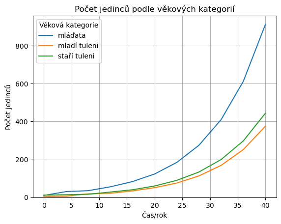

import numpy as np
import matplotlib.pyplot as plt
import pandas as pd
np.set_printoptions(suppress=True);
L = np.matrix([
0, 1.26, 2.0,
0.614, 0, 0,
0, 0.808, 0.808
]).reshape(3,3)
N = 10
X = np.zeros((3,N+1))
X[:,0] = [10,5,12]
for i in range(N):
X[:,i+1] = L@X[:,i]
fig, ax = plt.subplots(1)
cas = np.linspace(0,N,N+1) * 4
ax.plot(cas,X.T)
ax.legend(
["mláďata","mladí tuleni","staří tuleni"],
title="Věková kategorie"
)
ax.set(
ylim=(0,None),
title="Počet jedinců podle věkových kategorií",
ylabel="Počet jedinců",
xlabel="Čas/rok"
)
ax.grid();

import pandas as pd
df = pd.DataFrame(data=X.T,
columns=["mláďata","mladí tuleni","staří tuleni"],
index=4*np.arange(0,X.shape[1])
)
df.index.name = "čas/rok"
df.columns.name = "věková kategorie"
df
| věková kategorie | mláďata | mladí tuleni | staří tuleni |
|---|---|---|---|
| čas/rok | |||
| 0 | 10.000000 | 5.000000 | 12.000000 |
| 4 | 30.300000 | 6.140000 | 13.736000 |
| 8 | 35.208400 | 18.604200 | 16.059808 |
| 12 | 55.560908 | 21.617958 | 28.008518 |
| 16 | 83.255664 | 34.114398 | 40.098193 |
| 20 | 123.180526 | 51.118977 | 59.963773 |
| 24 | 184.337457 | 75.632843 | 89.754862 |
| 28 | 274.807107 | 113.183199 | 133.633266 |
| 32 | 409.877362 | 168.731564 | 199.427703 |
| 36 | 611.457177 | 251.664700 | 297.472688 |
| 40 | 912.042898 | 375.434707 | 443.703010 |
df.plot(grid=True, title="Vývoj počtu tuleňů", ylabel="počet jedinců")
plt.savefig("tuleni.pdf")

styly = ["-","--","-."]
fig, ax = plt.subplots(1,2, figsize=(10,5))
df.plot(grid=True, title="Vývoj počtu tuleňů",
ylabel="počet jedinců",
#logy=True,
ax =ax[0],
style = styly
)
df.div(df.sum(axis=1), axis=0).mul(100).plot(
title="Procentuální zastoupení kategorií",
ylabel="procento z celkového počtu",
ax=ax[1], grid=True, legend=False, style=styly)
# plt.suptitle("Vývoj počtu tuleňů")
plt.tight_layout()
plt.savefig("tuleni2.pdf")
df.plot(grid=True, title="Vývoj počtu tuleňů", ylabel="počet jedinců", logy=True)
<Axes: title={'center': 'Vývoj počtu tuleňů'}, xlabel='čas/rok', ylabel='počet jedinců'>
df.plot(grid=True, title="Vývoj počtu tuleňů", ylabel="počet jedinců", logy=True)
<Axes: title={'center': 'Vývoj počtu tuleňů'}, xlabel='čas/rok', ylabel='počet jedinců'>
df.sum(axis=1)
čas/rok
0 27.000000
4 50.176000
8 69.872408
12 105.187384
16 157.468254
20 234.263276
24 349.725163
28 521.623571
32 778.036629
36 1160.594565
40 1731.180614
dtype: float64
df.div(df.sum(axis=1), axis=0).mul(100).plot(
title="Procentuální zastoupení věkových tříd",
ylabel="procento z celkového počtu")
<Axes: title={'center': 'Procentuální zastoupení věkových tříd'}, xlabel='čas/rok', ylabel='procento z celkového počtu'>